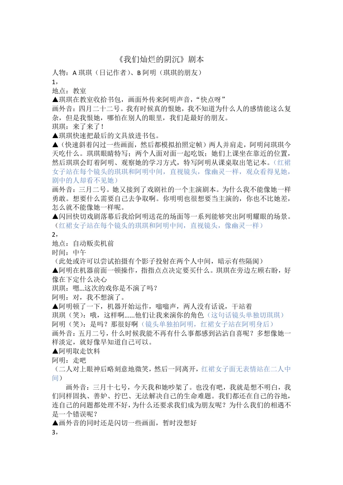
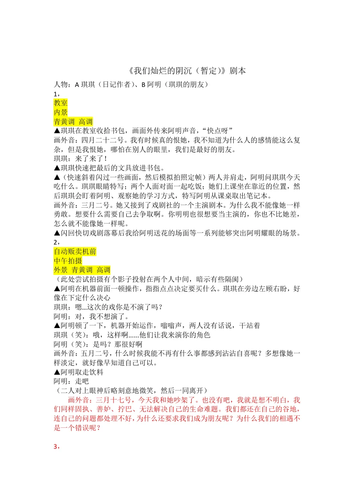
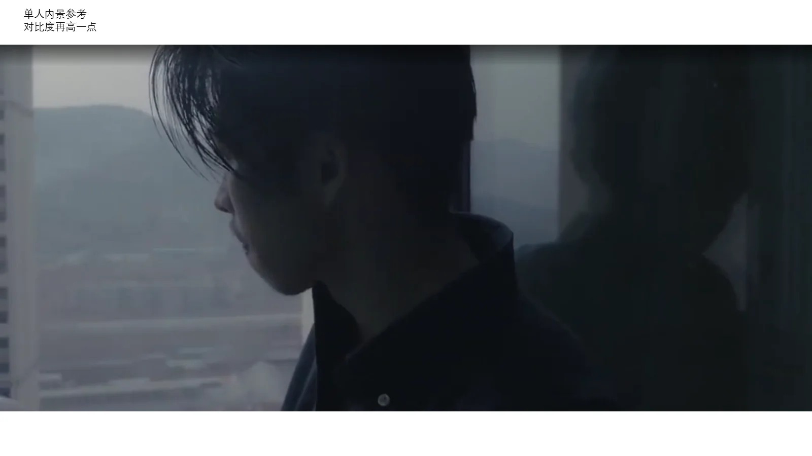
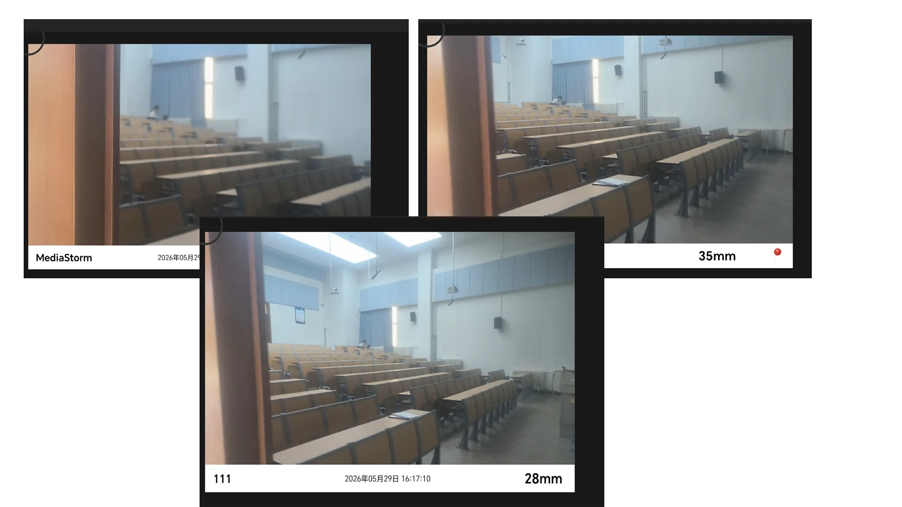
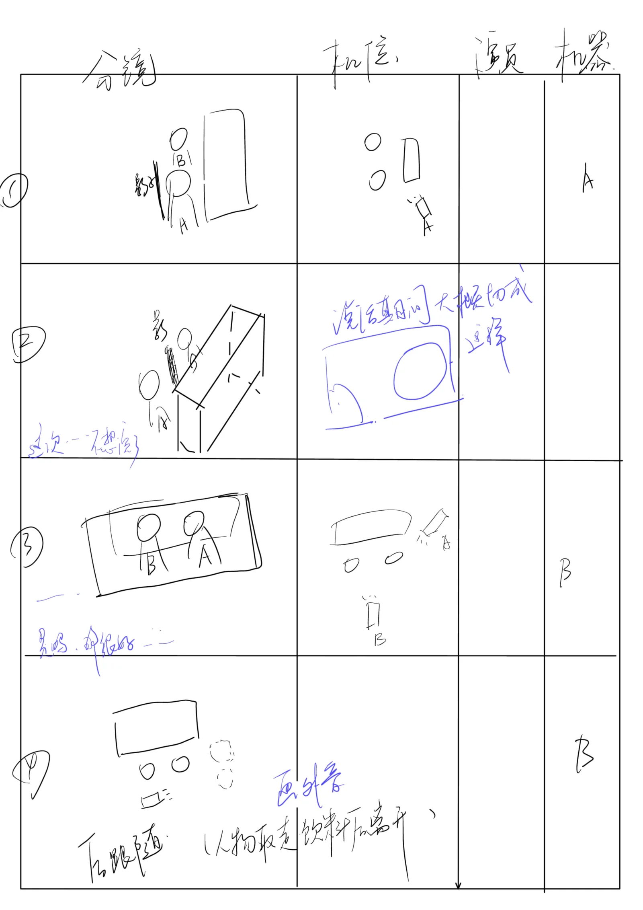
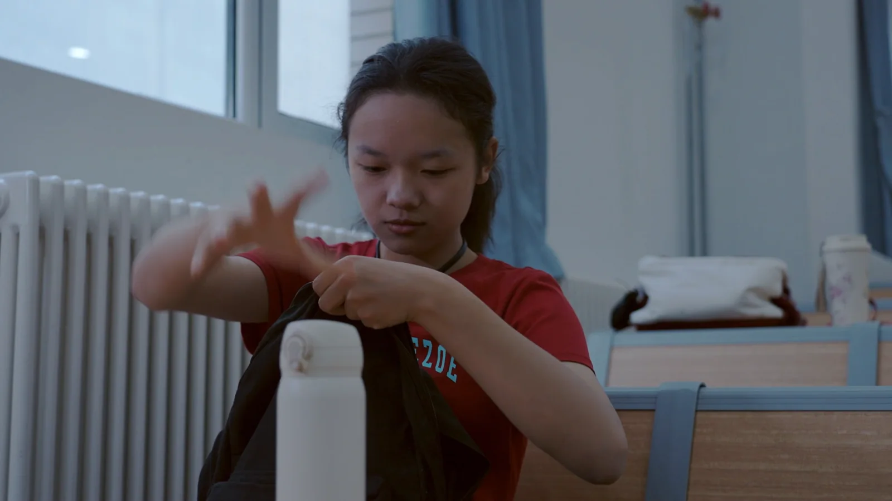
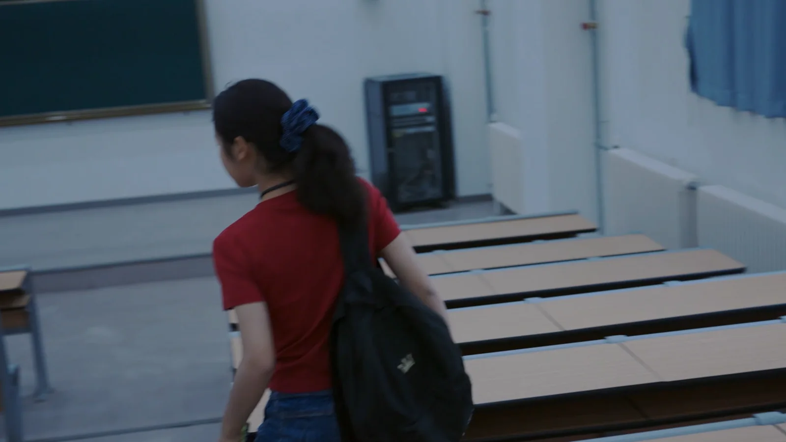
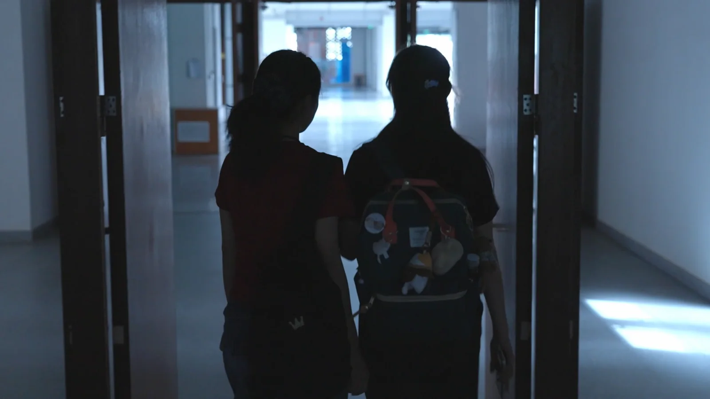
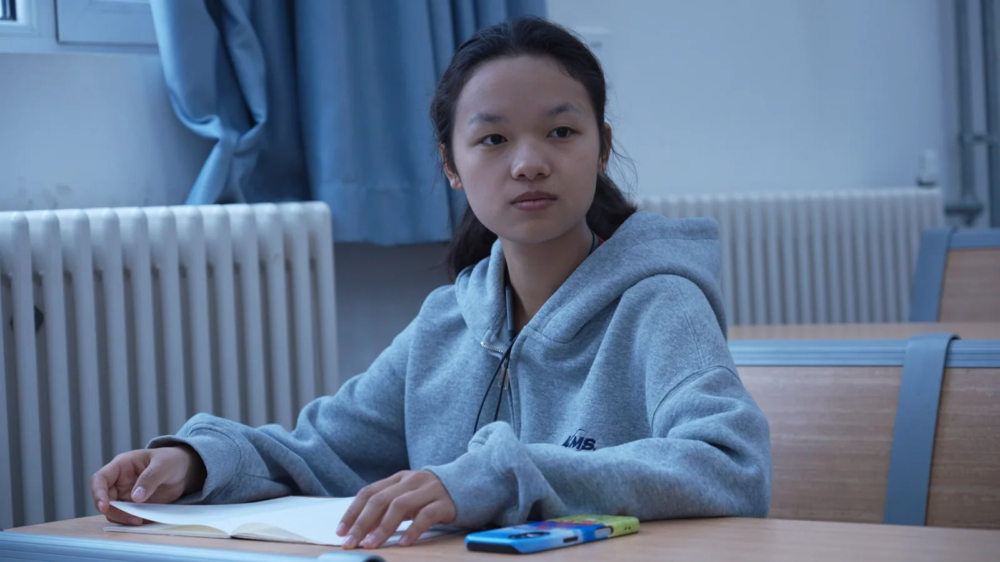
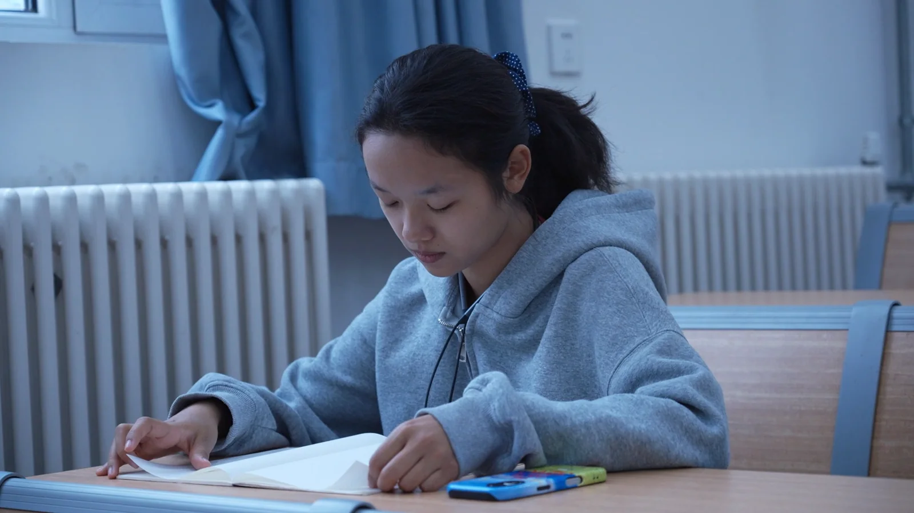

删去红裙幽灵
不再用一个角色替嫉妒发言，避免把复杂关系变成单一象征；改用影子、遮挡和人物之间的空位。
01 / Film direction & production
一部关于嫉妒、依赖和重新伸手的短片。我的工作，是把日记里说不清的矛盾，变成可以被拍出来的关系动作。
项目状态：已形成 63 秒拍摄版本；页面同时保留前期方案与试拍复盘。
Read the caseProject positioning
短片从琪琪的日记出发：她羡慕朋友阿明的勇敢和光亮，又无法停止依赖她。冲突不是“朋友决裂”这么简单，而是两个人都在自己的谷地里，仍然愿意成为对方唯一的观众。
Creative problem
最初版本曾尝试加入一个具象的“红裙幽灵”作为嫉妒的外化。迭代时，我把这个装置删掉，把冲突交还给人物、空间和光线。
“为什么我们既憎恶又信赖彼此，为什么我们的爱立足于我们的恨，我们的恨生根于我们的爱。”剧本最终版 · 琪琪画外音
Three decisions
不是为了让画面“更电影”，而是让观众能在角色的身体、距离和观看方向里读到关系变化。
不再用一个角色替嫉妒发言，避免把复杂关系变成单一象征；改用影子、遮挡和人物之间的空位。
把第四场从日常教室改为昏暗剧场排练，让阿明主动坐到第一排，成为琪琪唯一的观众。
日常使用青黄调和高调光；剧场转向红色、低调与高反差，让舞台成为关系摊牌的空间。
Script evolution
蓝字修改版里，具象的红裙人物被移除，第四场重写为剧场排练；同时补上场景调性、内外景和高低调标记，让文本开始能直接支持拍摄。


Visual system
摄影参考不是装饰，而是把“日常的亲密”和“舞台上的摊牌”拆成两种可执行的画面规则。



Production learning
5 月 26 日试拍反馈记录了没有打光、器材准备遗漏、虚焦过曝、焦距未预先确认和缺少柔光/反光板等问题。
明确人物目标、画外音和关系节点。
青黄日常与红色剧场形成可执行对照。
用手绘分镜确认遮挡、距离与动作方向。
把器材、焦段、曝光与反光控制列为拍摄前检查。
将拍摄素材整理成 63 秒版本，继续迭代节奏与声音。
Selected frames
以下静帧来自 63 秒拍摄版本。点击图片可放大查看。






Selected still
静帧集中呈现角色距离、走廊空间和低照度影像方向；完整动态版本继续通过外部作品链接观看。